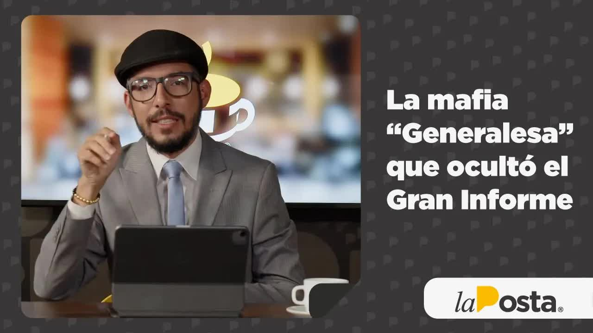
Feb 22, 2023 · El Punto Final: the generals' mafia
In December 2021, the U.S. ambassador said Ecuador had narco-generals, and four of them lost their visas. A year later, La Posta obtained the León de Troya report: the police had wiretapped the Albanian mafia and found the president's brother-in-law talking to its operator. The case was closed. In March 2023, Generals Giovanni Ponce and Mauro Vargas were heard on audio giving the order to shut it down, and Commander General Tannya Varela recounted that she had gone to Carondelet and that the president had already spoken with his brother-in-law. The traffickers called her the godmother. In December 2025 she was arrested, along with the two police officers who had led the investigation.


The word came from the U.S. ambassador. In December 2021, Michael Fitzpatrick said in an interview that Ecuador had narco-generals and that visas would be revoked. Five days later, four generals lost their American visas. On December 20, on Café la Posta, Andersson Boscán summed it up this way: that drug trafficking had reached the top of the police was something there was no proof of, but also no doubt about; now there was the certainty the embassy provided. That weekend, journalist Paúl Romero of Ecuavisa had pulled the generals' asset declarations from the Comptroller General's Office website. Boscán put them on screen: Commander General Tannya Varela, 872,000 dollars in assets and a debt of 440,000; General Ramiro Ortega, 631,000; General Vargas, of Intelligence, 625,000; General Villegas, 585,000; General Fausto Salinas, 1,136,141 dollars. He did the math of adding up twenty years of salaries on the police pay scale without spending a cent, and it didn't add up. Mauricio Alarcón, of Fundación Ciudadanía y Desarrollo, asked the embassy to release the names, as it had in Central America, and the Comptroller's Office to cross-check those declarations against the financial system.
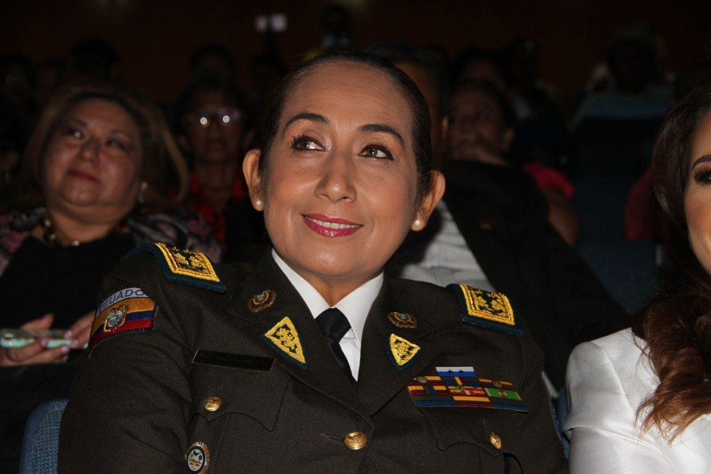
The final guest was Felipe Rodríguez, a criminal defense lawyer, who introduced himself as Varela's attorney in the criminal case for falsifying information in a public document. What was at stake was the generals' internal war. In July 2021, the commander, together with Government Minister César Monge, had rated four generals who then left the institution: Víctor Araus, Correa, Terán and Rodríguez. Araus accused her of inventing the evaluation meeting; a criminal guarantees judge, acting in a constitutional capacity, ordered them reinstated. Rodríguez said the meeting took place over WhatsApp, that he would request a forensic examination of Varela's phone, that the embassy had unofficially warned the government and the commander of suspicions about those four generals, and that the assets belonged to the marital estate she shared with her husband, General Noguera. He said Lasso had taken Varela to a meeting in Cartagena as a vote of confidence. Boscán replied that the complicated part was that every week more names of generals without visas came out. On February 23, 2022, Fitzpatrick again: the police, prosecutors and judges had the information in their hands and needed to prepare their reports properly. On the show, Germán Rodas, of the National Anti-Corruption Commission, spoke of negligence.
That drug trafficking has reached the top brass is something we had no proof of, but we had no doubt about. Today we have the certainty the American embassy provides.
Andersson Boscán, December 20, 2021
Four years later, the story of the narco-generals would take on another reading, told on the same show. In December 2025, Ricardo Vanegas, a former assembly member from the Anti-Corruption Parliamentary Front, said that the report the ambassador relied on when he first spoke of narco-generals had been written personally by Varela, based on a recorded conversation between Araus and Rubén Cherres in which the general promoted himself as the next commander, and that it served to clear out of the way the four who stood ahead of her husband in the line of promotion. Lasso sent them home; Noguera was promoted. Boscán added that in unpublished conversations there is an order to spread the claim that Araus has ties to drug trafficking, that the report is handed to the embassy and that the embassy takes the bait. Time, he said, proved Araus right.
León de Troya began in May 2021. An alert on May 21 put police on the trail of Rubén Cherres Fayoni and an Albanian man. With court orders, a team led by Lieutenant Colonel José Luis Erazo intercepted more than ten thousand calls: it found narco-planes landing in Ecuador, confirmed drug shipments to Europe and the United States, meetings in Manta and in a building in Samborondón, and Cherres talking with government politicians and with Danilo Carrera, the president's brother-in-law, who lobbied for posts and promotions. The final report runs 145 pages. It was shelved in early 2022 and declared confidential. In late 2022 it reached Boscán and Velásquez, who were then living in a hotel room with their daughters because their security team had detected a threat at their home. On February 13, 2023, Boscán appeared before the Assembly's Oversight Committee with El Gran Informe (The Great Report): the financing of Lasso's campaign with 1.5 million dollars in face masks and medical supplies, Agriculture Minister Bernardo Manzano handing his résumé to the operators, Carrera brokering posts in front of the president. And he said who had shut down the investigation.
One of the first who will have to answer before this committee and before the country is whoever was running Anti-Narcotics at the time. I am talking about General Giovanni Ponce. It was he who ordered this case closed.
Andersson Boscán before the Oversight Committee, February 13, 2023
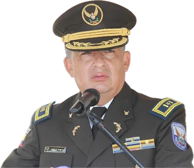
There were three names. Giovanni Ponce, anti-narcotics director, whom former minister Patricio Carrillo had declared the best anti-narcotics general in history. Mauro Vargas, director of Intelligence, who received a briefing on the case; Boscán said he had a copy. And Commander General Tannya Varela, who on July 7, 2021, at 13:40, entered Carondelet Palace with Lieutenant Colonel Erazo without signing the log at the main entrance, according to military intelligence, authorized by then-Colonel Ponce, who was in charge of communications. The government responded the same day with a statement: the report had been shelved by decision of the Attorney General's Office and validated by a judge because it lacked merit. The next day, Lasso devoted a national broadcast to it: the abuse is publishing a confidential report while omitting that it was dismissed by prosecutors and shelved by court order almost a year ago. Government Minister Henry Cucalón came on the show and repeated that the reasons for shelving and reopening were a matter for the Attorney General's Office. Security Secretary Diego Ordóñez said there was not enough evidence.
Leads the León de Troya team. Alert on May 21, 2021, about Cherres and an Albanian; court-ordered wiretaps; in June he brings the commander the link between Danilo Carrera and Rubén Cherres
Asks to be kept informed. When the reports stop coming, because the mobsters are talking about the woman general, she demands to be briefed. Requests a meeting at Carondelet
July 7, 2021, 13:40. Receives Varela and Erazo without a log entry. Looks at the diagrams, dictates his brother-in-law's number. According to Varela, he calls Danilo Carrera: he won't talk anymore
Days after the warning, according to the team, every target changes phone numbers, traffickers included
Anti-narcotics director. In front of the team: we have to close it and open another preliminary investigation without the Danilo part or the president part. Orders Erazo's transfer and disbands the unit
Director of Intelligence. Receives a briefing on the case. Yes, yes, we have to close it: tomorrow it's going to hurt the president
December 21, 2021. Signs the letter asking the prosecutor to close the preliminary investigation because the suspects were supposedly out of the country
Seventeen days later they shelve the case and declare it confidential. No one has said who gave them the order from Quito
Receives the 145-page report in late 2022. February 13, 2023: El Gran Informe at the Assembly. March 14: the recordings
La Posta showed the document that contradicted the government. Dated December 21, 2021, seventeen days before the formal closure, Lieutenant Cristian Moya signed a letter asking the prosecutor, if feasible, to close the preliminary investigation because the citizens allegedly belonging to the organization were out of the country and no incriminating evidence had been obtained. It was false, and the police do not ask to close cases they themselves are investigating. A week after the hearing, Fernando Villavicencio, from the Anti-Corruption Parliamentary Front, confirmed with a document signed by Ponce that Erazo's team had been dismantled, and asked the Attorney General's Office to investigate why the commander and the anti-narcotics chief disbanded a unit investigating one of the largest trafficking cases to Europe, working with Europol, British police and the DEA. The Attorney General's Office reopened the investigation. Ponce and Vargas did not appear before the Assembly: the police issued a statement, signed by Commander Fausto Salinas, saying its members are not subject to political oversight and that the institution had not ordered the closure.

On February 22, 2023, on El Punto Final, Boscán gave them a name: while the threat reports talked about the Albanian mafia, he wanted to look at the most dangerous mafia, the generals' mafia. Vargas, he said, instead of warning whether drug trafficking was contaminating the police, was campaigning with trolls and persuading Minister Ordóñez to replace the Armed Forces high command. Ponce, fired by Lasso on national television after the murder of María Belén Bernal at the Police Academy, remained a general and had been rewarded with the directorship of airports. Interior Minister Juan Zapata had asked from day one for them to be removed; the president did not do it. Why do the generals want information, he concluded: not to do their jobs, but to keep the politicians in their grip.
On March 14, 2023, one month and one day after El Gran Informe, La Posta aired the voices. A police source had handed over the recordings less than three weeks after Boscán called Varela to ask her, in an off-the-record conversation, whether she knew about León de Troya, whether she had gone to Carondelet in July 2021 and whether she had ordered Mauro Vargas to close a drug trafficking investigation. She said no to everything and swore on her son. Mónica Velásquez told her she was lying. In the first recording, Giovanni Ponce talks with Mauro Vargas in front of the investigative team, their subordinates: how many cases have we not investigated and uncovered, and precisely this one, where the president is involved, we're putting our whole heart into. Vargas: yes, yes, we have to close it; we should close it because tomorrow it's going to hurt the president. In the second, the plan: open another preliminary investigation, for money laundering, only against the Albanians, and tell the prosecutor that neither the Danilo part nor the president part is in it anymore. Boscán explained why that is serious: only the Attorney General's Office, which holds the power to prosecute, decides which investigation is opened or closed, and the two generals were handling preliminary investigations at will to protect the president's circle and, as a consequence, the mafia.
How many cases have we not investigated and uncovered? And precisely this one, where the president of the Republic is involved, we're putting our whole heart into it.
Yes, yes, we have to close it.
I think we should close this, because tomorrow this is going to hurt the president.
We're going to open another preliminary investigation. Yes, yes, of course. And we tell him that neither the Danilo part nor the president part is in it anymore.
Those face masks had a way out. For them to count it as a campaign contribution, where are the papers? I can pick up the phone right now and tell anybody: I put in five million buying face masks. How do you prove to me that it's income?
I am convinced that the president knows. Institutionally, I have to make my decisions.
I don't care. This, you want to tone it down? Tone it down. Because the president called me to the Presidency and told me: this, he says, he's not going to talk anymore. It's over. And Guillermo Jr. isn't stupid. So I was at ease.
I swear on my son that none of that is true. You know what a son means to a mother.
Los Lobos move with people higher up. Los Lobos were moving with a woman who was a police commander or director.
The Presidential Guard records in its log everyone who enters the president's office. The July 7, 2021, visit does not appear in any log; it is known from Varela's audio and because the government admitted it a month after El Gran Informe.
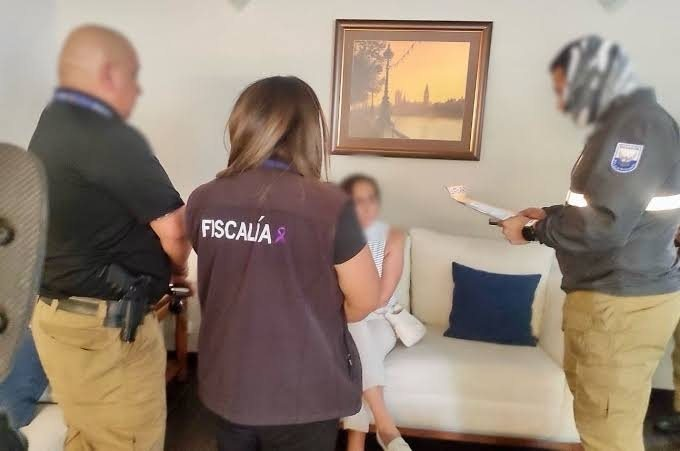
Then, the commander. In one recording, Varela confirms that Vargas is the one who orders the case closed. In another, she talks about the campaign money the report documented: the face masks had a way out, because for it to count as a campaign contribution, where are the papers; anyone can say they put five million into face masks, and how do you prove it's income. Velásquez put it this way: the woman who was supposed to be the head of the police investigation was there acting as the president's lawyer. The last recording is the one that changed the case. Varela says she is convinced the president knows, that if they want to tone it down they should tone it down, that the president called her to the Presidency and told her Danilo won't talk anymore, that it's over, that Guillermo Jr. isn't stupid, and that she was at ease. To the investigative team, that meant someone in Carondelet had tipped off the brother-in-law about a confidential drug trafficking investigation. Days later, according to the team, the entire structure changed phone numbers, traffickers included. The question Boscán put on air was direct: Mr. President, did you tell Danilo; Mr. Carrera, did you warn the traffickers.
I don't care. This, you want to tone it down? Tone it down. Because the president called me and told me: he's not going to talk anymore. It's over. And Guillermo Jr. isn't stupid. So I was at ease.
Tannya Varela, audio aired on March 14, 2023
That morning, Varela had sent Boscán a message reaffirming that she had nothing to do with it and did not know about the case. Neither she nor the police command answered the show's questions; Communications Secretary Andrés Seminario blocked the number. Boscán confronted Commander Fausto Salinas for staking his reputation on the statement defending Vargas and Ponce, issued the same day three police officers who had investigated the case received death threats, and said the investigators had been sent to the most dangerous places in the country. He named Diego Ordóñez as responsible for Ponce remaining in the police after being fired on national television: a president whose order is not carried out the next day is a puppet. And he described the government as held hostage by a mafia of generals who used what they knew to keep it in their grip.
The fall came within 24 hours. On March 15, Café la Posta opened with the news: Lasso had ordered Ponce and Vargas placed on leave, and both requested their discharge, confirmed by Salinas. Boscán confirmed that the Attorney General's Office was investigating Varela, Vargas and Ponce, after Correa's movement requested the investigation. The government issued a statement denying it had sought the shelving of the case, announcing the dismissals and asking the Attorney General's Office to investigate Danilo Carrera, who in a few weeks had gone from irreproachable man to a brother-in-law under investigation. Cucalón said these were two officers talking and that only a prosecutor and a judge can shelve a case; Boscán replied that there is a difference between giving an opinion and giving an order, and that a general who tells his subordinates the case has to be closed is giving an order. Leonidas Iza tweeted that Lasso was being propped up by the narco-generals. Virgilio Saquicela, president of the Assembly, spoke of an impeachment trial. Salinas said that once the discharges were filed, the police had nothing to investigate internally. General Juan Carlos Barragán, a former anti-narcotics director, responded to Ponce's defense, which cited 221 tons seized: the fight is not interdiction but dismantling structures, and intelligence should have warned the president when an operator with a record was circling fifty blocks from Carondelet.
That same day, Diego Ordóñez admitted on Teleamazonas that the president knew about the first phase of León de Troya. Boscán then re-created the scene for Lasso, who according to his ministers watched the show every morning: Varela entered his office on July 7, 2021, at 13:40 and introduced Erazo; Erazo showed him the link diagrams and the conversations between his brother-in-law and the structure; Lasso asked how they knew it was his brother-in-law, they told him they had the number, he took out his cell phone and, as they dictated it, said: yes, yes, that's my brother-in-law's phone. He pointed to a photo and asked who it was: Juan Carlos Reina, son of the founder of Banco de Guayaquil, whose involvement included comments about slipping packages of cocaine into shipments. Lasso had told the foreign press he didn't know even 10 percent of it. One month and two days after the hearing, the government accepted that the president knew on July 7, 2021.
On February 19, 2024, with Lasso out of power, the mainstream press published as a scoop that a police officer known as the godmother was in charge of providing protection to the drug trafficking organization linked to the Albanian mafia, according to the León de Troya report, and that the officer was Tannya Varela. Boscán and Velásquez went back over what they had published a year earlier: the visit to Carondelet, the recordings, the generals' exit, the influence-peddling investigation. And they recounted what the wiretaps said about her. In the transcripts the team reviewed, the mobsters and Cherres talk about the woman general: the general has warned us. The only woman general in the police at the time was Varela. There is a moment in the timeline, backed by documents, when the team reports the tapped numbers to its superiors, including the commander; the next day, every target of the investigation changes phones. Varela issued a statement in her defense that day; she had gone a year without responding to the show's invitation. Danilo Carrera was watching from his home, under arrest.
Imagine you're the team investigating León de Troya. Your boss tells you to keep her informed. And one of the drug traffickers says everything has been arranged with the godmother, the woman general. And you have to tell your boss that she's in a drug trafficking case.
Andersson Boscán, December 19, 2025
The nickname didn't come from her colleagues. It came from the crooks, the traffickers, especially those linked to the Albanians, because a godmother is the one who looks after you, who protects you. In December 2025, Boscán recounted how he met her: the first woman to make general, well connected, easy to reach, close to the presidential family, known for cozying up to politicians; she went from carrying Pierina Correa's shopping bags to running errands for César Monge. His sources in organized crime, Albanians but also Mexicans from the Jalisco New Generation Cartel, already called her the godmother; there were always attempts, without evidence, to link her and her husband, General Noguera, to that cartel. Her only documented exposure to a drug trafficking structure is León de Troya. Fernando Villavicencio named her on the Assembly floor without saying her surname: alias the godmother, linked to Jalisco New Generation, Sinaloa and the Albanians. In the Parliamentary Front's report, according to Vanegas, she appears with her name and photo. And on Villavicencio's phone, on October 17, 2022, the operator Claudia Garzón wrote to him about Norero's death: Los Lobos were moving with a woman who had been a police commander.
On the afternoon of December 18, 2025, four years after the July 7, 2021, meeting, Tannya Varela was placed in provisional detention while awaiting charges from the Attorney General's Office and a judge's decision on whether she could remain free during the case. Arrested with her were Colonel José Luis Erazo and officer Rodney Rengel, the two police officers who had investigated León de Troya; Rengel had been pushed out of the police. Boscán opened the December 19 show with a confession: I believed Tannya Varela once. He told the audience about the December 2022 call, the oath on her son and Velásquez's words, she's lying to you, she's lying to you, and explained what the Attorney General's Office had in its hands: the only person who can identify who gave the verbal order, in an office in Quito and in front of witnesses, for a prosecutor in Manabí to close a drug trafficking scheme that flooded Europe with cocaine. That order doesn't give itself; someone has to say the words.
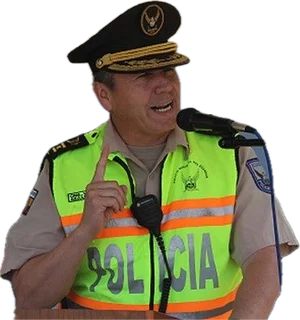
The case file, 162 volumes long, combines two cases. When Diana Salazar reopened León de Troya in 2023, what she investigated was not the drug trafficking but which of the investigators had shared the information with the press and with the Parliamentary Front. Because investigating only the investigators would have been indefensible, the Attorney General's Office merged that case with the influence-peddling case against Vargas, Ponce and Varela, opened after the March 14, 2023, recordings. Boscán said that on the day of publication Salazar called him, scandalized, and told him there was no crime, and that he mentioned influence peddling; she asked for the Penal Code (COIP), and the offense fit. The case passed through the hands of prosecutors Yanina Villagómez; Soria, because of the Quito Provincial Court jurisdiction the former commander's rank requires; Wilson Toainga as attorney general; and the acting prosecutor in 2025. Ricardo Vanegas, who filed the complaint against Danilo Carrera and presented the Front's report with Villavicencio in March 2023, said Carrera is in custody and convicted, that three more generals remain, that the penalty for the crime Varela can be charged with is one to three years, and that Erazo was being treated as a guinea pig: he had done what he was supposed to do. On the meeting with Lasso, he said the police had no business informing the president about a confidential investigation in which his brother-in-law had a conflict of interest, and that the one who did the informing was Varela. On the shelving, he said that not only prosecutor Balda but also the judge who validated it should be investigated, because if someone influenced one of them, someone influenced the other.
I honestly can't understand how the team of police officers who investigated León de Troya hasn't been decorated. They investigated their own boss in the police and the president of the Republic. They are all being persecuted, threatened.
Andersson Boscán, December 19, 2025
What the case left behind: two generals out of the police with lifetime pensions, a former commander under arrest, two investigators arrested with her, and an investigation that was never about who trafficked drugs or who benefited the traffickers, but about who talked. Verónica Sarauz, Villavicencio's widow, does not rule out that León de Troya is connected to his assassination; Vanegas agrees. La Posta said it on February 13, 2023, with names, and proved it with recordings a month later. As Boscán said in signing off: more information on the godmother is coming; many godchildren must be scared.
Updated September 5, 2026
Commander general of the police in 2021. The first woman general. Took Erazo to Carondelet and said on tape: if they want to tone it down, tone it down. The traffickers called her the godmother.
Anti-narcotics director. Ordered the investigation closed and another opened without the Danilo part or the president part. Ordered Erazo's transfer.
Director of Intelligence. Received the briefing on the case. Yes, yes, we have to close it.
Lieutenant colonel, head of the León de Troya team. Entered Carondelet with Varela. His unit was disbanded.
Officer on the investigative team. Pushed out of the police.

President. Received Varela and Erazo on July 7, 2021, and dictated his brother-in-law's phone number. His government admitted a month after El Gran Informe that he knew about the first phase.
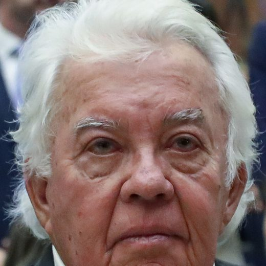
The president's brother-in-law. Talked with Cherres about posts and promotions. According to Varela, the president told him to stop talking.
Operator for the Albanian mafia. At the center of the wiretaps.
Commander general in 2023. Signed the statement defending Ponce and Vargas and confirmed their discharge.
A general stripped of his visa in 2021. Accused Varela of inventing his evaluation. The report against him, according to Vanegas, was written by her.
Security Secretary. Argued for keeping Ponce; admitted that Lasso knew about the first phase.
Photos via Wikimedia Commons. Guillermo Lasso: Presidency of the Republic of Ecuador (Public domain); Danilo Carrera: National Assembly of Ecuador (CC BY-SA 2.0).
Statement of February 13, 2023: the report was shelved by decision of the Attorney General's Office and validated by a judge because it lacked merit. National broadcast of the 14th: the abuse is publishing a confidential report while omitting that it was dismissed and shelved by court order. Statement of March 14: the president did not request the shelving, removed the two generals and asked the Attorney General's Office to investigate Danilo Carrera.
On the show, in February: the reasons for shelving and reopening are a matter for the Attorney General's Office. In March: these are two officers talking, one is entitled to one's opinion, but only a prosecutor and a judge can shelve a case.
There was not enough evidence for the case to be prosecuted. On March 15: the president was aware of the first phase, in which no one was implicated, and asked for the generals to leave.
Any officer implicated by findings in a legal proceeding will be removed; the police cannot get ahead of the process, and the Attorney General's Office directs the investigation.
Statement: the police did not order the closure, and its members are not subject to political oversight. On March 15: the generals requested their discharge; there is no longer an internal investigation, and the truth will be established in the Attorney General's Office proceedings.
By phone to Boscán, in December 2022: I swear on my son that none of that is true. By message, the morning of March 14, 2023: she had nothing to do with it and did not know about the case. She did not respond to the show's questions. In February 2024 she issued a statement in her defense.
Defended his record with 221 tons of seized drugs. Did not respond to the Assembly or to the show.
Blocked the show's number. His office offered a response that never came.
The generals' evaluation meeting took place over WhatsApp; the assets belong to the marital estate she shares with General Noguera and can be justified; her husband's promotion was based on objective criteria.
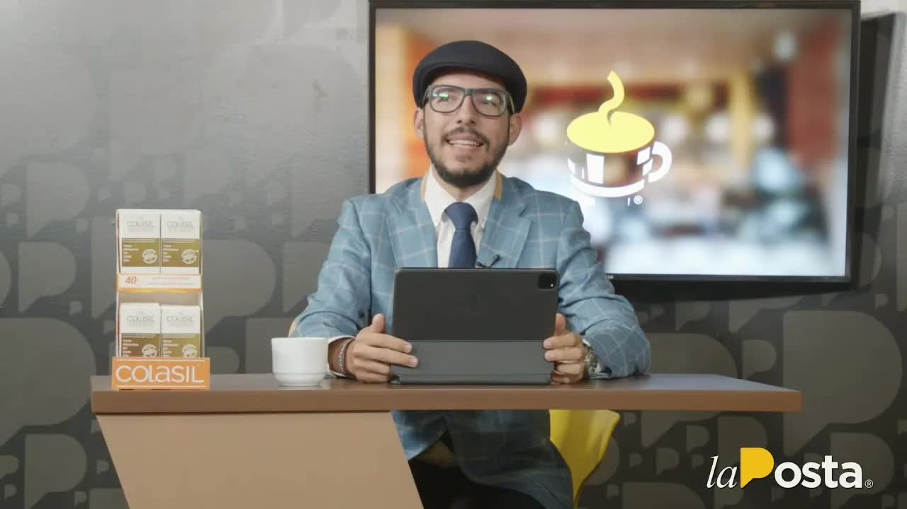
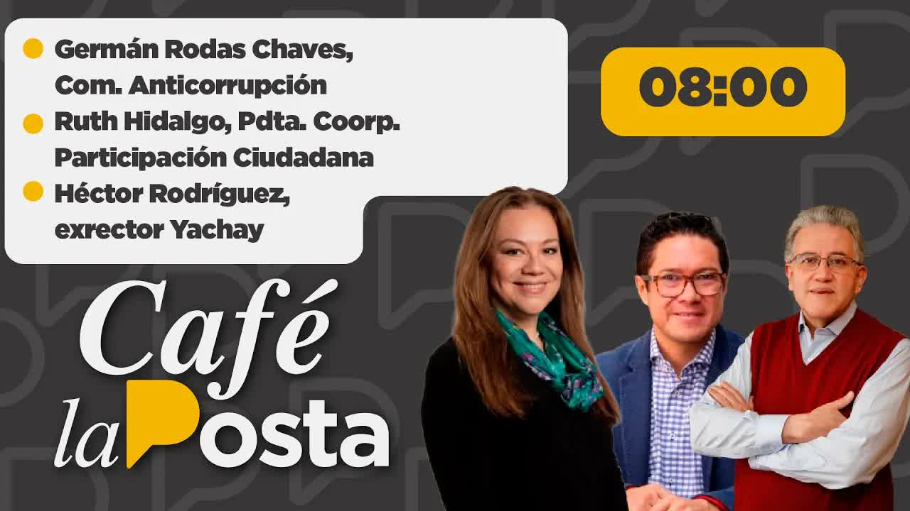
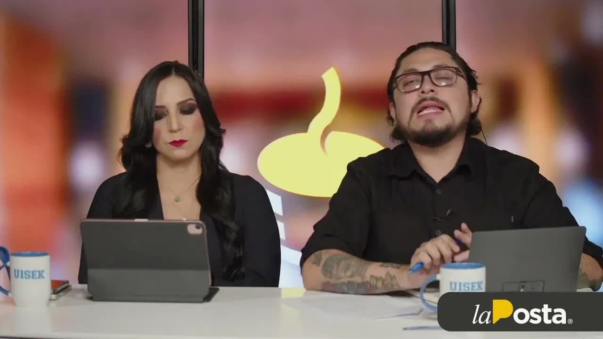
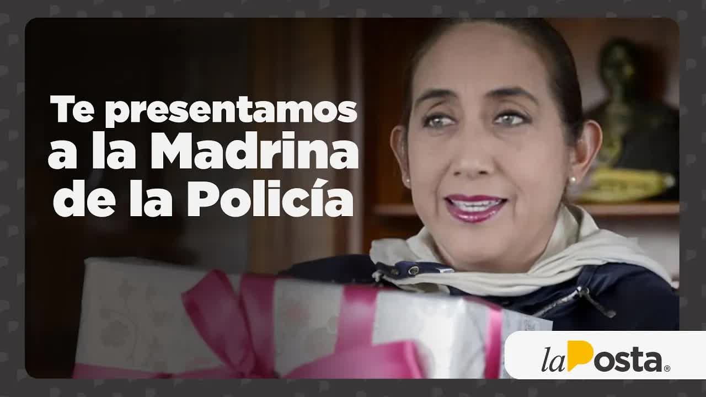
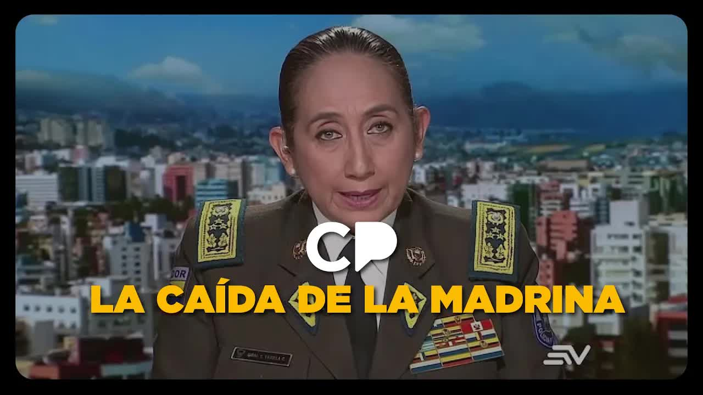
live up to three opportunities because you win this race ask about our differentiated service system welcome to very good morning I'm between are buscan and study café la posta a space to review the political situation in current national affairs today is monday december 20 the year of our lord 2021 special thanks to those already connecting of course in studio is if person sangu…
Read the full transcriptare you ready to start your degree because you know that to meet your goals and overcome your challenges you need to be a professional are you ready to take on your future because only the perfection achieved through sacrifice will bring your development at ecotec we have the best tools for you to reach your goals and live up to the opportunities because you win this race ask with our system of …
Read the full transcriptwhile the country has watched the hearings in the Gran padrino committee reports of threats have started to emerge some reports of threats talk about the albanian mafia I want to turn my gaze to the most dangerous mafia the general esa mafia I'm going to introduce you to two people This gentleman is named Mauro Vargas in general of the republic that little smile so sexy my God of a general who is doing his job well …
Read the full transcriptlie case has been reopened so true is it that the attorney general's office does something rather uncommon reopen an investigation because I have found new elements What are those new elements that there were a bunch of ministers and public officials parading around the operators of the albanian mafia Ok that said let's recall what yours truly said at the national assembly this was part of the hearing on the 1…
Read the full transcriptwe are ready to give you peace of mind and solutions a member firm of codys international we are the ones who will take those extra worries off your hands so you can focus on what matters most uise presents its new medical degree that will train doctors and health professionals as competent ethical forward-thinking and interprofessional people we generate the experience needed to practice medicine and its r…
Read the full transcriptplease advise us my hair we all love your daughter Anderson says Gabriela Dávalos Especially when she sleeps Of course yes today is the 15th birthday of my niece Rafaela a hug for Gabriela Dávalos's niece please a round of applause Bravo And well I'll keep reading the comments in a little bit ok let's go Yes my computer my tablet just turned on so that's why I wasn't wasn't talking much the m…
Read the full transcriptI once believed Tanvarela, the former commander general of the national police. It's curious because police officers get nicknames like criminals do and it's more curious if you think that police officers give the nicknames to criminals, I don't know, one-eye, big-lips, cap, ear, crazy carel, but criminals also give nicknames to the police. That's the case of the former commander general tan Varela, for example, whom th…
Read the full transcriptTranscripts from each show's automatic captions. They have not been corrected by hand: use them to find a phrase and jump to the exact minute in the video, not as verbatim quotes.
The Attorney General's Office opens an investigation into Vargas, Ponce and Varela after the recordings.
León de Troya is reopened to investigate the investigators and the leak, not the drug trafficking.
Varela, Erazo and Rengel arrested. Arraignment hearing pending.
The recordings cited are those La Posta aired on March 14, 2023, and revisited in 2024 and 2025; the quotes are transcribed as they were heard on air. The people who denied the claims or did not respond are noted in this case file. This case is a continuation of El Gran Padrino and the Albanian mafia investigation, which have case files of their own.